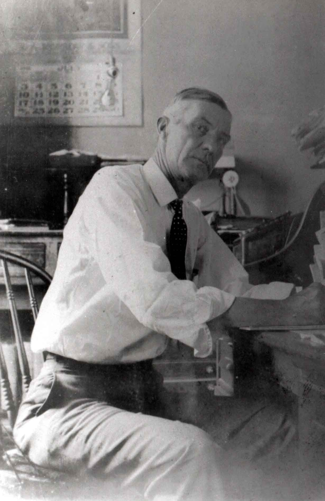
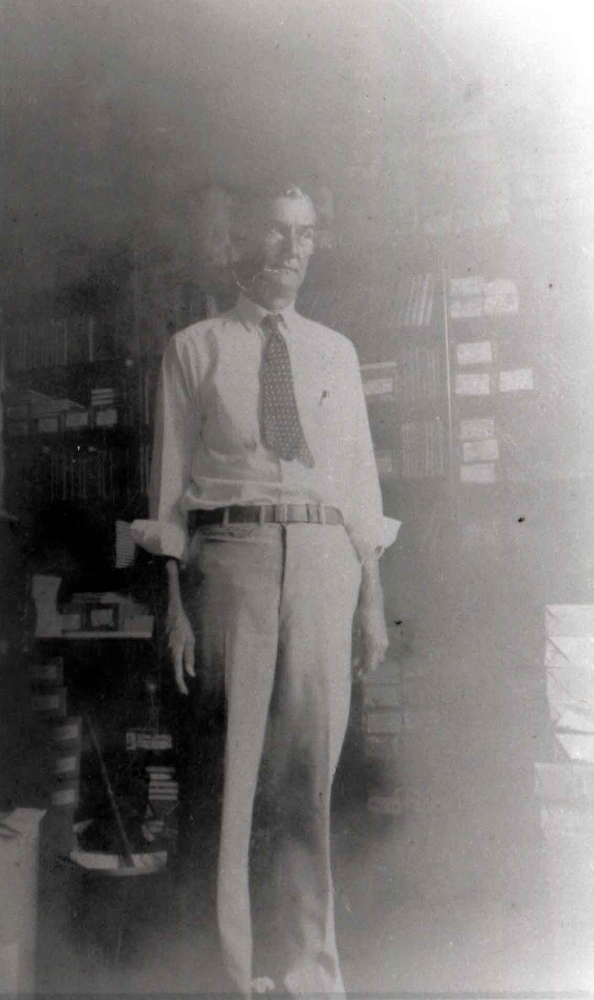
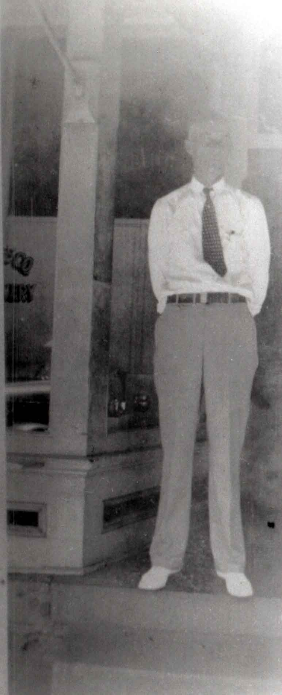

Here are some photographs of William John Rudge at his jewelry and book store, aka. The W. J. Rudge Co. Judging by his age in the photographs, I suspect these were taken in the early 1930s.
Site Map
Last updated on 27 Feb 2001